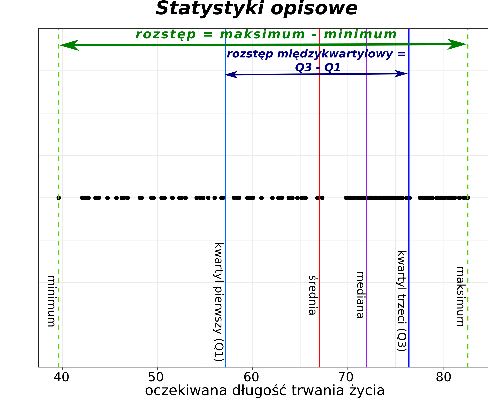
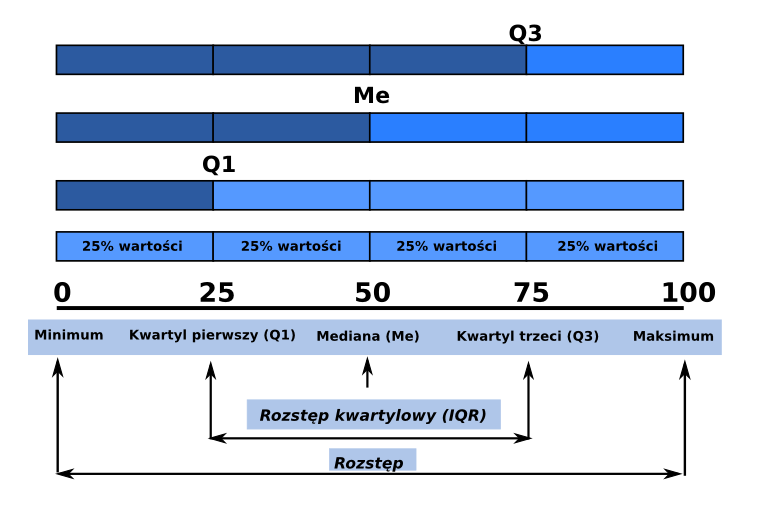

library(gapminder)
library(dplyr)5 Statystyki opisowe
Statystyki opisowe wykorzystuje się do przedstawienia ogólnej charakterystyki danych.
Statystyki opisowe dzielimy na:
Miary położenia - określają przeciętny poziom oraz rozmieszczenie wartości zmiennej:
- Miary przeciętne - np. średnia arytemtyczna - charakteryzują średni lub typowy poziom wartości zmiennej; mówią zatem o przeciętnym poziomie rozważanej zmiennej;
- Wartość modalna - wartość najczęściej występująca w zbiorze danych;
- Kwantyle - dzielą zbiorowość na określone części, np. 4, 10, 100 części.
Miary rozrzutu - określają granice zmienności danej zmiennej:
- rozstęp;
- rozstęp kwartylowy;
- odchylenie standardowe.
Miary asymetrii i koncentracji.
- skośność;
- kurtoza.

data('gapminder', package ='gapminder')
dane2007 <- filter(gapminder, year==2007)5.1 Podstawowe statystyki
Zestaw podstawowych statystyk opisowych obliczany jest za pomocą funkcji summary(). Funkcja ta oblicza wartość minimalną, wartość maksymalną, pierwszy i trzeci kwartyl, medianę oraz średnią.
summary(dane2007) country continent year lifeExp
Afghanistan: 1 Africa :52 Min. :2007 Min. :39.61
Albania : 1 Americas:25 1st Qu.:2007 1st Qu.:57.16
Algeria : 1 Asia :33 Median :2007 Median :71.94
Angola : 1 Europe :30 Mean :2007 Mean :67.01
Argentina : 1 Oceania : 2 3rd Qu.:2007 3rd Qu.:76.41
Australia : 1 Max. :2007 Max. :82.60
(Other) :136
pop gdpPercap
Min. :1.996e+05 Min. : 277.6
1st Qu.:4.508e+06 1st Qu.: 1624.8
Median :1.052e+07 Median : 6124.4
Mean :4.402e+07 Mean :11680.1
3rd Qu.:3.121e+07 3rd Qu.:18008.8
Max. :1.319e+09 Max. :49357.2
5.2 Statystyki opisowe: Miary położenia
5.2.1 Średnia arytmetyczna
- Obliczana jest jako iloraz sumy liczb i ilości tych liczb.
- Jest najczęściej używaną miarą charakteryzującą rozkład cechy
- Wady: czuła na wartości odstające
srednia_lifeExp <- mean(dane2007$lifeExp)
srednia_lifeExp [1] 67.00742Obliczyć średnią wartość dla PKP (gdpPercap) w 2007 roku.
5.2.2 Średnia ważona
srednia_w_lifeExp <- weighted.mean(dane2007$lifeExp, dane2007$pop)5.2.3 Średnia harmoniczna
harmonic_mean = function(x){
1 / mean(1 / x)
}rzeka = c(6, 3.2) #km/h
harmonic_mean(rzeka)[1] 4.1739135.2.4 Średnia geometryczna
geometric_mean = function(x){
n = length(x)
prod(x) ^ (1 / n)
}zmiana <- c(1.026392, 1.011959)
geometric_mean(zmiana)[1] 1.019155.2.5 Kwantyle
Kwantyle to wartości cechy, które dzielą analizowany zbiór danych na określone części pod względem liczby jednostek. Części te pozostają w stosunku do siebie w określonych proporcjach:
- Kwartyle - podział na 4 części:
- Kwartyl pierwszy (Q1)
- Mediana - kwartyl drugi
- Kwartyl trzeci (Q3)
- Decyle - podzial na 10 części
- Percentyle - podział na 100 częsci
Funkcja quantile() oblicza dowolną wartość kwantyli. Argument probs pozwala na zdefyniowanie dowolnych wartości, które mają zostać wyliczone. Argument ten przyjmuje wartości z przedziału od 0 do 1.

Kwartyle
Funkcja quantile() domyślnie zwraca wartośći kwartyli.
kwartyle <- quantile(dane2007$lifeExp)
kwartyle 0% 25% 50% 75% 100%
39.61300 57.16025 71.93550 76.41325 82.60300 Kwartyle są także obliczane przez funkcję summary(), która dodatkowo zwraca także wartości minimalną, maksymalną oraz średnią.
Decyle
W poniższym przykładzie seq(0,1,0.1) zwraca sekwencję wartości od 0 do 1 z krokiem co 0.1. Odpowiada to podziałowi danych na 10 równych części.
decyle <- quantile(dane2007$lifeExp, probs = seq(0, 1, 0.1))
decyle 0% 10% 20% 30% 40% 50% 60% 70% 80% 90%
39.6130 48.1734 54.1814 59.8127 67.0006 71.9355 73.2048 75.4719 78.2668 79.8223
100%
82.6030 Percentyle
W poniższym przykładzie zbiór zostanie podzielony na 100 równych części.
percentyle <- quantile(dane2007$lifeExp, probs = seq(0, 1, 0.01))
head(percentyle, 10) 0% 1% 2% 3% 4% 5% 6% 7%
39.61300 42.20582 42.53488 42.62397 43.21484 43.87365 45.17202 46.16868
8% 9%
46.40872 46.73593 Dowolne wartości kwantyli
W poniższym przykładzie zostanie wyliczony 5 oraz 95 percentyl.
q <- quantile(dane2007$lifeExp, probs = c(0.05, 0.95))
q 5% 95%
43.87365 80.74060 Obliczyć pierwszy, trzeci kwartyl oraz decyle dla gdpPercap.
Mediana
Mediana to wartość, która dzieli zbiór danych na 2 równe części. Mediana obliczana jest przez funkcję median().
median_lifeExp <- median(dane2007$lifeExp)
median_lifeExp [1] 71.9355Obliczyć medianę dla gdpPercap.
Mediana a średnia arytmetyczna
- dla rozkładu symetrycznego mediana oraz średnia będą równe.
- mediana jest lepszą miarą w przypadku rozkładów skośnych.
- średnia jest bardziej czuła na wartości odstające.
- średnia jest bardziej przydatna dla małych zbiorów danych.
Podsumowanie: Warto podawać obie wartości.
5.2.6 Wartość modalna
- wartość cechy, która w zbiorze danych występuje najczęściej. W R nie ma wbudowanej funkcji do obliczania tej statystyki.
5.3 Statystyki opisowe: Miary rozrzutu
5.3.1 Minimum i maksimum
min_lifeExp <- min(dane2007$lifeExp)
min_lifeExp[1] 39.613max_lifeExp <- max(dane2007$lifeExp)
max_lifeExp[1] 82.603range(dane2007$lifeExp)[1] 39.613 82.6035.3.2 Rozstęp
- najprostsza miara zmienności
- różnica między wartości maksymalną oraz wartością minimalną
- wrażliwy na wartości odstające
range_lifeExp <- max(dane2007$lifeExp) - min(dane2007$lifeExp)Uwaga! W R funkcja range() zwraca wektor składający się z dwóch wartości - minimalnej oraz maksymalnej, a nie rostęp (różnicę między tymi wartościami).
Obliczyć rozstęp dla gdpPercap
5.3.3 Rozstęp kwartylowy
- różnica między kwartylem trzecim i kwartylem pierwszym
IQR_lifeExp <- IQR(dane2007$lifeExp)Obliczyć rozstęp kwartylowy dla gdpPercap.
5.3.4 Wariancja
- wariancja oraz odchylenie standardowe mierzą jak daleko dane rozchodzą się od średniej.
var_lifeExp <- var(dane2007$lifeExp)5.3.5 Odchylenie standardowe
obliczane jako pierwiastek z wariancji
obok średniej jest jednym z najczęściej stosowanych parametrów statystycznych:
- jest obliczane ze wszystkich obserwacji w zbiorze danych
- im zbiór danych jest bardziej zróżnicowany tym większe odchylenie standardowe.
małe odchylenie standardowe - wartości są blisko średniej
duże odchylenie standardowe - wartości są daleko od średniej.
sd_lifeExp <- sd(dane2007$lifeExp)
sd_lifeExp [1] 12.07302Jakie jest odchylenie standardowe dla gdpPercap?
5.4 Opisywanie danych nominalnych
5.4.1 Częstość
table(dane2007$continent)
Africa Americas Asia Europe Oceania
52 25 33 30 2 table(dane2007$continent) / length(dane2007$continent) * 100
Africa Americas Asia Europe Oceania
36.619718 17.605634 23.239437 21.126761 1.408451 5.5 Statystykiw grupach
Pakiet dplyr pozwala także na obliczenie statystyk według grup, np. średnia długość trwania życia na poszczególnych kontynentach.
- Średnia oczekiwana długość życia w 2007 roku według kontynentów.
Obliczenie statystyk w grupach wymaga najpierw pogrupowania danych (funkcja group_by()).
gapminder2007 <- filter(gapminder, year == 2007)
by_continent <- group_by(gapminder2007, continent)
smr_by_continent <- summarize(by_continent,
mean_le = mean(lifeExp))
smr_by_continent# A tibble: 5 × 2
continent mean_le
<fct> <dbl>
1 Africa 54.8
2 Americas 73.6
3 Asia 70.7
4 Europe 77.6
5 Oceania 80.7Powyższy kod można zapisać także z wykorzystaniem operatora łączącego %>%
mean_by_continent <- gapminder %>%
filter(year == 2007) %>%
group_by(continent) %>%
summarize(mean_le = mean(lifeExp))
mean_by_continent# A tibble: 5 × 2
continent mean_le
<fct> <dbl>
1 Africa 54.8
2 Americas 73.6
3 Asia 70.7
4 Europe 77.6
5 Oceania 80.7Oblicz średnią oczekiwaną długość trwania życia w poszczególnych latach.
- Średnia oczekiwana długość życia w podziale na kontynenty oraz lata.
by_continent_year <- group_by(gapminder, continent, year)
smr_by_continent_year <- summarize(by_continent_year,
mean_le = mean(lifeExp))`summarise()` has grouped output by 'continent'. You can override using the
`.groups` argument.smr_by_continent_year# A tibble: 60 × 3
# Groups: continent [5]
continent year mean_le
<fct> <int> <dbl>
1 Africa 1952 39.1
2 Africa 1957 41.3
3 Africa 1962 43.3
4 Africa 1967 45.3
5 Africa 1972 47.5
6 Africa 1977 49.6
7 Africa 1982 51.6
8 Africa 1987 53.3
9 Africa 1992 53.6
10 Africa 1997 53.6
# ℹ 50 more rowsOblicz średnią wartość gdpPercap w 2007 roku w podziale na kontynenty.
Oblicz średnią wartość gdpPercap w podziale na poszczególne kontynenty oraz lata. Przedstaw wynik w “układzie szerokim” - każdy wiersz to określony kontynent, a każda kolumna to określony rok.
5.6 Braki danych
W R braki danych zazwyczaj kodowane są jako NA - Not Available.
NA + 1 [1] NA2*NA [1] NAx = c(1,2,NA)
mean(x)[1] NAmean(x, na.rm = TRUE)[1] 1.5